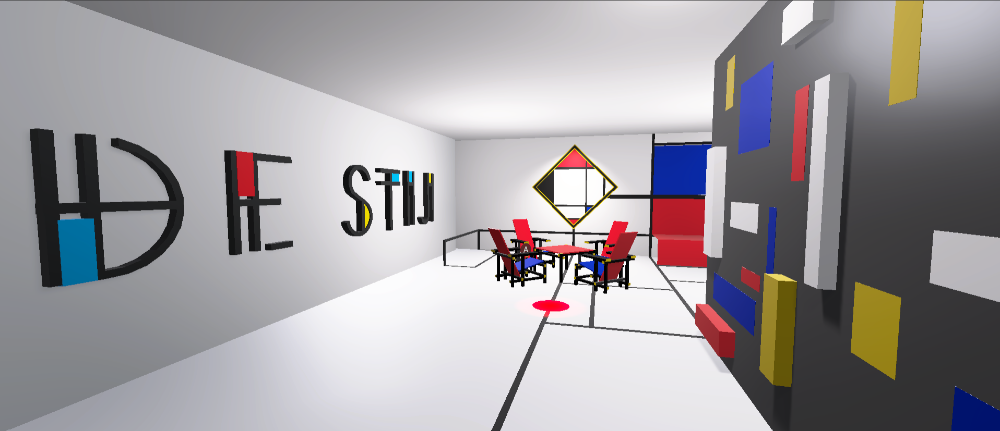
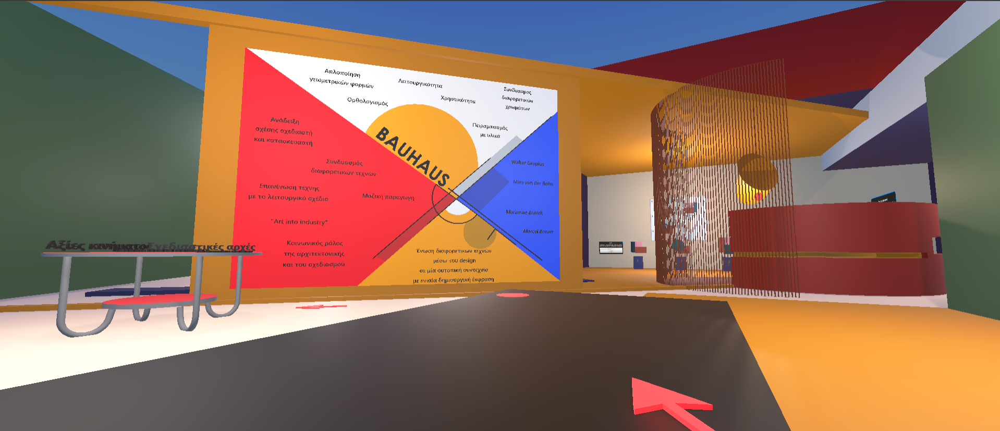

VR Application for Teaching De Stijl & Bauhaus.
“
The development of virtual & interactive environments that embodies the principles of the art movements of "De Stijl" and "Bauhaus".
In accordance with the design principles of each movement, the appropiate data were taken.
In the form of an VR escape room and its game based learning activities users can learn about the art movements through interactive & problem solving method.

